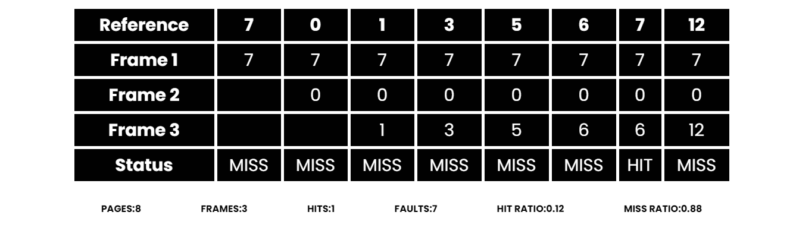

Last in First out(LIFO):-
LIFO works on the principle of “Last in First out“.
It replaces the newest page that arrived at last in the main memory.
It is implemented by keeping track of all the pages in a stack.
Examle 1:
Consider page reference string 7, 0, 1, 3, 5, 6 , 7, 12 with 3 page frames.Find number of page faults.
solution:

- Initially all slots are empty, so when 7, 0, 1 came they are allocated to the empty
- slots —> 3 Page Faults.
- when 3 comes, it is not available in memory so it replaces the newest page slot i.e 1 ==> 3 —> 1 Page Faults.
- Then 5 comes, it is not available in memory so it replaces the newest page slot i.e 3 ==> 5 .1 Page Fault.
- 6 comes, it is also not available in memory so it replaces the newest page slot i.e 5 ==>.1 Page Fault.
- 7 comes, it is available in memory so not increase page fault .0 Page Fault.
- Then 12 comes, it is not available in memory so it replaces the newest page slot i.e 5 ==> 12 .1 Page Fault.
- Total page fault :- 7
- Total page fault Ratio :- 0.88
- Total page Hit :- 1
- Total page Hit Ratio :- 0.12
Reference For Better Understand